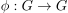
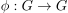
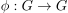

group automorphism
1. Definition
Sei  eine Gruppe und  ein Gruppenisomorphsimus, der insbesondere eine Gruppe auf sich selbst abbildet.
Dann ist
eine Gruppe und  ein Gruppenisomorphsimus, der insbesondere eine Gruppe auf sich selbst abbildet.
Dann ist  ein Gruppenautomorphismus.
ein Gruppenautomorphismus.
Sei eine Gruppe und  ein Gruppenisomorphsimus, der insbesondere eine Gruppe auf sich selbst abbildet.
Dann ist ein Gruppenautomorphismus.